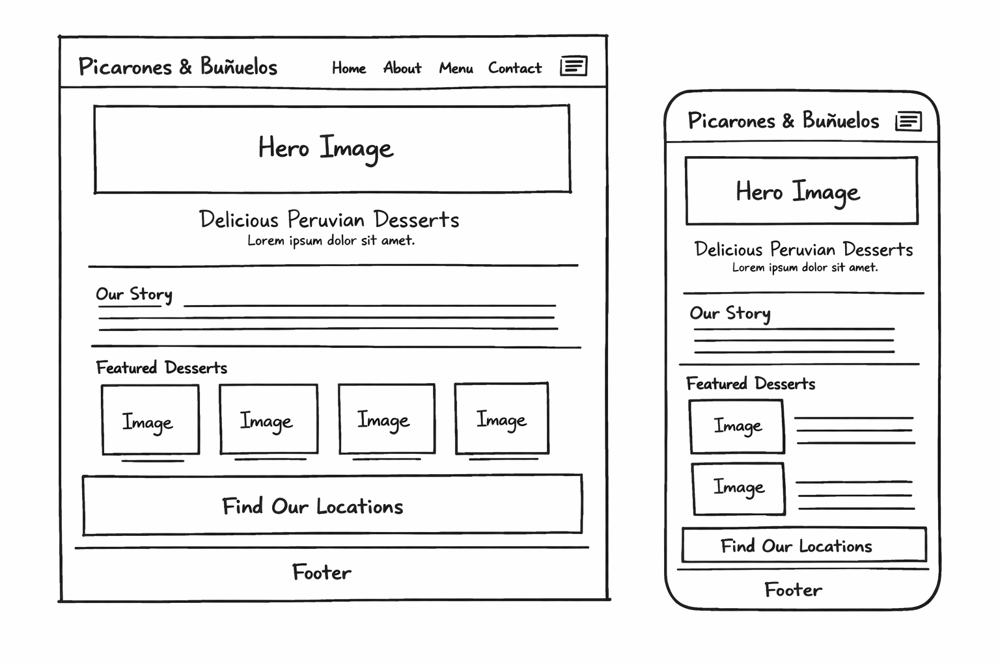

1 Site Name
Gustitos Doña Elena
The name reflects a traditional concept referring to an authentic Peruvian restaurant, evoking a deep nostalgia for the rich flavors and cultural experiences of Peru. A representative domain would be gustitosdonaelena.com.
2 Site Purpose
The site serves as an online presence for a local food entrepreneur specializing in traditional Peruvian desserts, picarones, and buñuelos. It will:
- Showcase the product menu with descriptions, photos, and pricing.
- Share the brand story and the artisan process behind each sweet.
- Provide location, schedule, and ordering instructions so customers can find and buy easily.
In short, the site turns curiosity into a purchase by educating, enticing, and directing visitors to order — all while supporting a local small business and celebrating Peruvian culinary heritage.
3 Scenarios
Questions a target visitor might ask when arriving at the site:
- What are picarones and buñuelos, and how are they different from regular doughnuts?
- Where can I find this entrepreneur this weekend, and do they take online orders?
- How much do the products cost, and is there a minimum order for events or catering?
4 Color Scheme
The palette is inspired by color associations about the warm, sweet, and comforting experience of enjoying picarones and buñuelos with fig syrup.
5 Typography
Three complementary typefaces create a hierarchy that is elegant, readable, and culturally warm.
Font 1 · Playfair Display · Headings (h1-h3), section titles
Picarones & Buñuelos
"Traditional flavors, handcrafted with passion."
Font 2 · Dancing Script · Logo, decorative pull-quotes
Dulce & Tradicional
Handwritten script
Font 3 · Lato · Body copy, navigation, buttons, labels
Our picarones are made from sweet potato and pumpkin, deep-fried to golden color and served with a rich fig syrup.
Humanist sans-serif — clean and highly legible at small sizes across all devices.
6 Wireframe - Home Page
Landing Page in mobile and desktop viewports.
Hand-drawn Wireframe (Desktop & Mobile)
